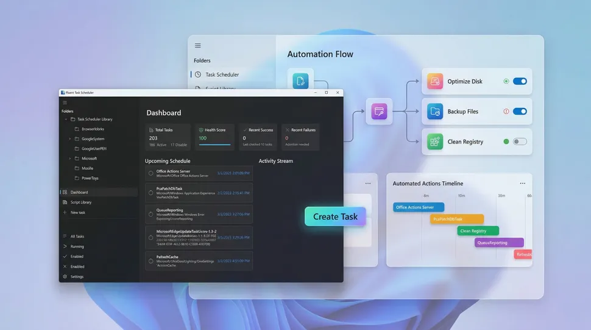

Windows 11, and even older versions of the operating system, have long included the powerful but aging Task Scheduler for automating tasks. It works and is reliable, but its legacy MMC interface and dated workflow make it intimidating for new users and visually out of place in a modern environment.
For years, Microsoft has modernized large portions of the operating system, yet Task Scheduler has remained largely unchanged. Ironically, what a trillion-dollar company has not redesigned in several releases, one independent developer has attempted to reimagine from the ground up with FluentTaskScheduler.
FluentTaskScheduler is a free, open-source, non-Microsoft modern wrapper in a self-contained executable that uses the existing Task Scheduler API. Built with WinUI 3 on the Windows App SDK and powered by .NET 8, it preserves the reliability of the underlying system component while delivering a clean Fluent Design interface, improved monitoring tools, and advanced automation controls in a streamlined experience.Key improvements include:
| FluentTaskScheduler: At a Glance | |
|---|---|
| Feature / Specification | Details |
| Application Name | FluentTaskScheduler |
| Developer | Independent (Non-Microsoft) |
| Pricing & License | Free, Open-source |
| Framework / Tech Stack | WinUI 3, Windows App SDK, .NET 8 |
| Underlying Engine | Legacy Windows Task Scheduler API |
| Key Upgrades | Fluent Design UI, enhanced monitoring tools, advanced automation controls, self-contained executable |